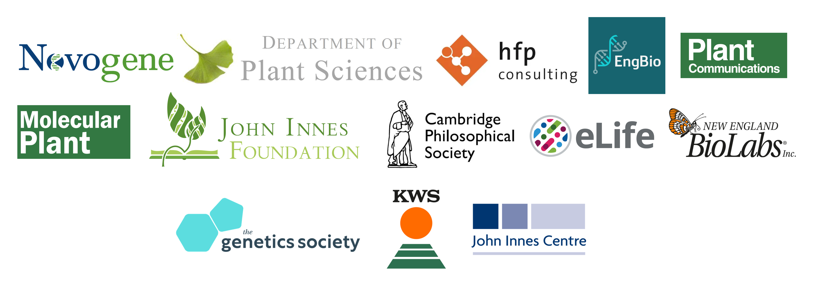

NoCaSS 2025 Sponsors

About the Biochemical Society
Founded in 1911, we’ve been at the forefront of advancing molecular bioscience for over 100 years, promoting its importance as a discipline, facilitating the sharing of knowledge and expertise, and supporting molecular bioscientists across all career stages.
Established in 1909, the John Innes Foundation’s mission is to advance the acquisition and application of knowledge about plants and microbes for societal, environmental and commercial benefit. It delivers this by supporting research, education, training and public engagement; and by encouraging agricultural innovation. Among much else, it is the primary sponsor of the prestigious JIF PhD Rotation programme at Norwich Research Park.
Azenta life sciences is dedicated to enabling life sciences organizations around the world to bring impactful breakthroughs and therapies to market – faster. Azenta encapsulates our commitment to helping customers reach new heights in their pursuit of scientific progress. At Azenta, we strive to keep elevating each other, our customers’ work and our industry – building a healthier world for people everywhere.
Molecular Plant is dedicated to serving the plant science community by publishing novel and exciting findings with high significance in plant biology. The journal focuses broadly on cellular biology, physiology, biochemistry, molecular biology, genetics, development, plant-microbe interaction, genomics, bioinformatics, and molecular evolution.
The John Innes Centre is an independent, international centre of excellence in plant science, genetics and microbiology. We are an independent, international centre of excellence in plant science, genetics and microbiology. Our institute fosters a creative, curiosity-driven approach to fundamental questions in bio-science, with a view to translating that into societal benefits. Over the last 110 years, we have achieved a range of fundamental breakthroughs, resulting in major societal impacts. The director of the John Innes Centre is Professor Graham Moore FRS.

Our vision is to ensure that our high-quality discovery science contributes to tackling fundamental challenges in Global Food Security, Growing a Sustainable Bioeconomy, and Protecting the Environment. We also aim to increase the visibility of Plant Sciences in the global arena, train significant numbers of plant biologists across all scales of the discipline from molecular biologists to biological engineers to conservationists, and drive advances in understanding of fundamental biology that will have major positive results for society. The Department comprises twenty-six research groups with a broad portfolio of grant income from diverse sources including UKRI, Government, Charitable Foundations and Industry that supports over fifty post-docs, 90 - 100 PhD students, and over twenty research assistants. Strategic links within Cambridge and across the East of England and further afield allow us to make the best use of our science.
The Sainsbury Laboratory Cambridge University (SLCU) is a research institute funded by the Gatsby Charitable Foundation within the School of Biological Sciences at the University of Cambridge. The Laboratory is focused on increasing understanding of the regulatory systems underlying plant growth and development. SLCU brings together specialists in biological, physical, and mathematical sciences integrating a range of wet-lab experimental research with computational modelling. This interdisciplinary approach is essential for understanding the complex dynamic and self-organising properties of plants.
The Crop Science Centre is a coalition between the University of Cambridge and NIAB, that combines their diverse expertise to create an environment for research excellence, with the capability to apply discoveries to crop improvement in the field.
Founded in 1919, and with a longstanding international reputation for expertise in plant varieties and seeds, today NIAB’s scientific capabilities span the crop improvement pipeline; from underpinning research required to develop higher yielding more climate resilient crops through to the extensive trials data, agronomy expertise and advice needed to ensure these advances are transferred effectively onto farm.
Today, NIAB is at the forefront of the application of genetics, physiology, soil science, precision agronomy and data science to improve the yield, efficiency and resilience of crop production across the arable, forage and horticulture sectors.
The Earlham Institute’s mission is to decode the scale and complexity of living systems so we can understand, benefit from, and protect life on Earth.
Since 1963 we’ve been breaking down boundaries between students and researchers, arts and science, business and social responsibility. We’re redefining what a university is and how it can best prepare you for a future in a rapidly changing world.
UEA is a home for everyone. We celebrate diverse voices and backgrounds, and we stand for equal opportunity in higher education. We’re a University of Sanctuary, where all are welcome, and we’re committed to recognising and learning from our whole community. Between the Sportspark and high-tech labs, much-loved music venues and the quieter corners of our (award-winning!) parkland, first-year undergraduates rub shoulders with world-leading climate experts, student entrepreneurs share a platform with the region's biggest brands, and emerging writers teach established authors a thing or two about the world today.
The Engineering Biology Interdisciplinary Research Centre EngBio IRC is a centralised hub for Engineering Biology research. It brings together and supports researchers working across disciplines - at the intersections of biology, engineering, computer sciences, design and bioethics. The EngBio IRC was established in 2013 at the University of Cambridge. Since then, the EngBio IRC has worked continuously to consolidate the position of the University of Cambridge as a nationally and internationally recognised centre of excellence in engineering biology.
Novogene utilises scientific excellence, a commitment to customer service and unsurpassed data quality to help our clients realise their research goals in the rapidly evolving world of genomics. With over 2,000 employees, multiple locations around the world, 37 NGS related patents, and over 670 publications in top tier journal such as Nature and Science, the company has rapidly become a world-leader in NGS services. In this conference, we will exhibit the latest genome sequencing solutions.
The Cambridge Philosophical Society is what’s termed a learned and professional Society and was created with the charitable aim of ‘of promoting scientific inquiry, and of facilitating the communication of facts connected with the advancement of Philosophy and Natural History’. The aims of the Society today are no different from its founders’ and, put simply, we are here to promote research in all branches of science and to encourage the communication of the results of scientific research.
The Centre for Microbial Interactions is a showcase of the work from over 100 microbiology research groups at Norwich Research Park. Our work generates significant discoveries and breakthroughs year-on-year to tackle some of the major challenges facing our planet and the people that live on it. We encompass a wide range of research themes from antimicrobial resistance and genomics to biotechnology and infection, with applications in the fields of medicine, agriculture, food, energy and climate change. Our work also spans a variety of scales – from interactions within a cell, to those between microorganisms, and those with hosts and environments.
Founded in the mid-1970s as a collective of scientists committed to developing innovative products for the life sciences industry, New England Biolabs is now a recognized world leader in the discovery and production of enzymes for molecular biology applications.
New England Biolabs – putting science first
Created "by scientists for scientists", NEB is renowned for consistently providing exceptional product quality and unsurpassed technical support. For over four decades, NEB has been shaping the landscape of bioscience research by discovering, developing and supporting superior research reagents. From our founding principles – placing the advancement of science and the stewardship of the environment as our highest priorities – to our unique corporate culture, NEB’s philosophy can be distilled down to three core values: passion, humility and being genuine.
A supplier-of-choice for scientists across the globe, NEB offers the largest selection of recombinant and native enzymes for genomic research. While restriction enzymes remain part of our core product portfolio, our ever-expanding catalog also includes products related to PCR, gene expression, sample preparation for next generation sequencing, synthetic biology, glycobiology, epigenetics and RNA analysis. Additionally, NEB is focused on strengthening alliances that enable new technologies to reach key market sectors, including molecular diagnostics development.
Our mission is to support the best fundamental plant science research in the UK, particularly in the areas of pathology and development. In doing so we can help solve some of the greatest challenges posed by population growth and climate change.
People are at the heart of our plant science programme, and we aim to nurture, sustain and increase the supply of high quality researchers in plant ecology through studentships, careers advice, and ad hoc grants. We also provide significant funding to international centres of excellence in bioscience research. This includes the construction of The Sainsbury Laboratory, within the grounds of the Cambridge University Botanic Garden, which houses about 150 of the world’s best plant scientists and support staff.
Nucleate is a student-led organization that represents the largest global community of bio-innovators.
Society’s most important advances have stemmed from those willing to think differently about what might be possible. The Advanced Research + Invention Agency (ARIA) empowers scientists and engineers, from our Programme Directors to the teams we fund, with the resources and freedom to pursue breakthroughs at the edge of the possible. Many will fail to meet their target, but their efforts will inspire the next generation. Those that do succeed will generate massive social and economic returns.
The Sainsbury Laboratory has made major contributions to the fundamental understanding of plant diseases through ground-breaking discoveries in molecular plant-microbe interactions. These discoveries are taken from the laboratory to the field with the aim of reducing worldwide losses to crop diseases. Through the discovery, engineering and deployment of novel immune receptors in crops, as well as genome editing tools, we can enable the generation of novel alleles for crop improvement.
We would like to thank our previous sponsors for their generous contribution, without whom this event would not have been possible in the past.
